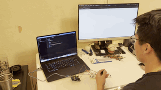
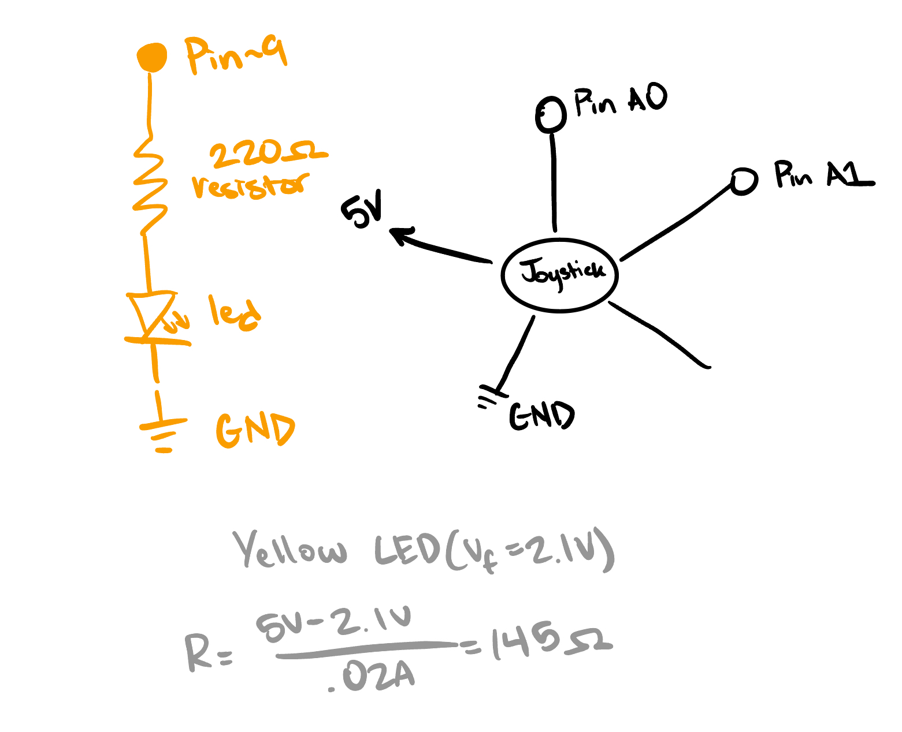
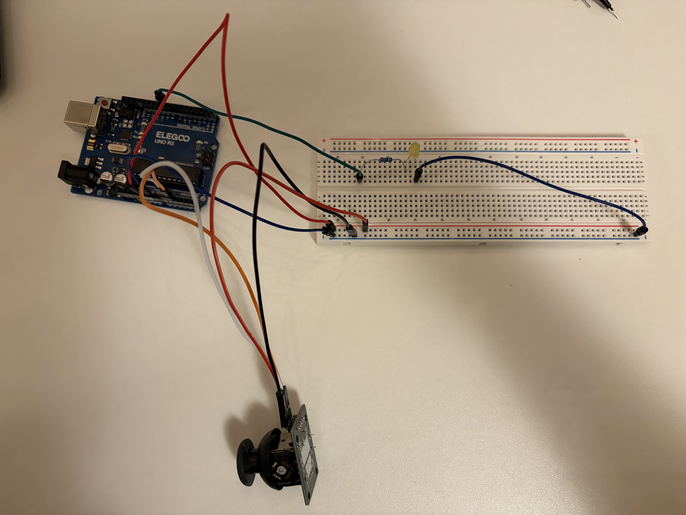

Here is all the documentation for assignment 6!

This schematic shows the joystick connected to A0, A1, 5V and GND. The yellow LED is connected to pin 9 through a 220 ohm resistor, which I calculated as 145 ohms, but I used the closest resistor on hand.

This is the physical implementation of the circuit on the breadboard, joystick, and LED.
Below is the code used to control the arduino system.
// Joystick X axis
const int joyXPin = A0;
// Joystick Y axis
const int joyYPin = A1;
// pin for yellow LED
const int led = 9;
void setup() {
// begin serial communication
Serial.begin(9600);
//set led as an output
pinMode(led, OUTPUT);
}
void loop() {
// read joystick x and y axis
int joyX = analogRead(joyXPin);
int joyY = analogRead(joyYPin);
// send x-axis value with comma separations
Serial.print(joyX);
Serial.print(",");
Serial.println(joyY);
// check if any data coming from p5.js webpage
if (Serial.available() > 0) {
// read in
int in = Serial.read();
// check if the character sent by webpage is a 1, mouse clicked
if (in == '1') {
// turn led on
digitalWrite(led, HIGH);
}
// check if character sent by webpage is a 0, mouse unclicked
else if (in == '0') {
// turn led off
digitalWrite(led, LOW);
}
}
// 50 ms delay for system connection
delay(50);
}
Below is the code used to control the webpage system.
// This should match the baud rate in your Arduino sketch (9600)
const BAUD_RATE = 9600;
// Declare global variables
let port, connectBtn;
// Variables to store the circle's position
let circleX = 0;
let circleY = 0;
function setup() {
// Run the serial setup helper function
setupSerial();
// Create canvas to fill entire browser window
createCanvas(windowWidth, windowHeight);
// Set starting position to center of canvas
circleX = width/2;
circleY = height/2;
}
function draw() {
// Check if port is open; if not, don't run the rest of the code
const portIsOpen = checkPort();
if (!portIsOpen) return;
// Read from port until a newline character is found
let str = port.readUntil("\n");
// If the string is empty, exit function to wait for more data
if (str.length == 0) return;
// Trim whitespace and split string into an array at the comma
let arr = str.trim().split(",");
// Ensure we have exactly X and Y values before proceeding
if (arr.length == 2) {
// Map X-axis (0-1023) to the width of the window (0 to windowWidth)
circleX = map(Number(arr[0]), 0, 1023, 0, windowWidth);
// Map Y-axis (0-1023) to the height of the window (0 to windowHeight)
circleY = map(Number(arr[1]), 0, 1023, 0, windowHeight);
}
// Clear the background to a light gray each frame
background(220);
// Check if the mouse is currently being pressed on the screen
if (mouseIsPressed) {
// Send the character '1' to the Arduino
port.write('1');
// Change the circle color to red to show interaction
fill(255, 0, 0);
} else {
// Send the character '0' to the Arduino
port.write('0');
// Keep the circle white when not clicking
fill(255);
}
// Draw a circle at the coordinates determined by the joystick
circle(circleX, circleY, 50);
}
// Managing serial connection
function setupSerial() {
// Initialize the p5.webserial port
port = createSerial();
// Check if there are any previously authorized ports
let usedPorts = usedSerialPorts();
if (usedPorts.length > 0) {
// Automatically try to open the first used port
port.open(usedPorts[0], BAUD_RATE);
}
// Create "Connect" button in the top left corner
connectBtn = createButton("Connect to Arduino");
connectBtn.position(5, 5);
// Link button click to the onConnectButtonClicked function
connectBtn.mouseClicked(onConnectButtonClicked);
}
function checkPort() {
// Logic to update the button text based on connection status
if (!port.opened()) {
connectBtn.html("Connect to Arduino");
background("gray"); // Visual indicator that it's disconnected
return false;
} else {
connectBtn.html("Disconnect");
return true;
}
}
function onConnectButtonClicked() {
// Toggle the port open or closed when the button is pressed
if (!port.opened()) {
port.open(BAUD_RATE);
} else {
port.close();
}
}
// Automatically resize the canvas if the browser window changes size
function windowResized() {
resizeCanvas(windowWidth, windowHeight);
}